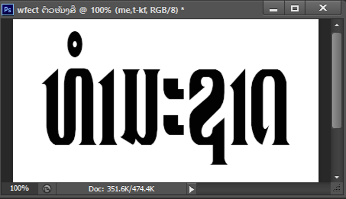

Welcome to Photoshop CS6
ຍິນດິຕ້ອນຮັບເຂົ້າສູ່ໜ້າເວັບບົດຮຽນໂຟ້ຊ້ອບ

ຍິນດິຕ້ອນຮັບເຂົ້າສູ່ໜ້າເວັບບົດຮຽນໂຟ້ຊ້ອບ

ເລີ່ມຕົ້ນການຮຽນຮູ້ຂອງແຕ່ງຮູບພາບ ແລະ ການອອກແບບກຣາຟິກດີຊາຍທີ່ສວຍງາມທັນສະໄໝ
ມີວິທີ ແລະ ຂັ້ນຕອນດັ່ງນີ້:
1.1.1 ເປີດໄຟລ໌ໃໝ່ ຫຼື ເຈ້ຍໃໝ່
1. ຄິກທີ່ File
2. ຄິກທີ່ New

ຮູບທີ 76 ຂັ້ນຕອນການສ້າງໄຟລ໌ໃໝ່
3. ຕັ້ງຄ່າຕາມຕ້ອງການແລ້ວ Ok

ຮູບທີ 77 ສະແດງເຖິງການຕັ້ງຄ່າໄຟລ໌ໄໝ່
1.1.2 ການພິມຂໍ້ຄວາມຕາມທີ່ຕ້ອງການ
ເຊິ່ງມີວິທີຄືດັ່ງນີ້: ເລືອກເຄື່ອງມື Horizintal Type Tool (T) ແລ້ວຄິກໃສ່ຕຳແໜ່ງທີ່ຕ້ອງການພິມໃນໜ້າຕ່າງໄຟລ໌ໃໝ່
ເຊິ່ງຕົວຢ່າງຂອງອຈແມ່ນຈະພິມຄຳວ່າ ທຳມະຊາດໃນຮູບແບບຂອງພາສາລາວດັ່ງລຸ່ມນີ້:
ຮູບທີ 78 ສະແດງເຖິງຕົວອັກສອນຫຼັງຈາກພິມແລ້ວ
1.1.3 ນຳເອົາຮູບພາບທີ່ຕ້ອງການໃສ່ອອກມາ
1. ຄິກທີ່ File
2. ເລືອກ Open
3. ເລືອກຮູບພາບຕາມທີ່ຕ້ອງການ

ຮູບທີ 79 ສະແດງເຖິງການເລືອກຮູບພາບອອກມາໃຊ້ງານ
ດຶງຮູບມາໃສ່ໃນໄຟລ໌ທີ່ເຮົາສ້າງຂຶ້ນມາທີ່ມີເລເຢີຂອງຕົວໜັງສືຢູ່ນັ້ນ ດັ່ງຮູບ
ຮູບທີ 80 ສະແດງເລເຢີທັງໝົດ
1.1.4 ສະລັບເລເຢີເຂົ້າກັນ
ກົດປຸ່ມ Alt ແລ້ວຄິກເມົ້າໃສ່ແຖບຂັ້ນລະຫວ່າງເລເຢີດັ່ງຮູບ

ຮູບທີ 81 ສະແດງເຖິງການຄິກຝັງເລເຢີຮູບພາບລົງໃນເລເຢີຕົວໜັງສື
- ສໍາເລັດໃສ່ພື້ນຫຼັງຕົວໜັງສືເປັນ ຮູບພາບ

ຮູບທີ 82 ສຳເລັດການໃສ່ພື້ນຫຼັງຕົວໜັງສືເປັນຮູບພາບ
1.2.1 ການສ້າງໜັງສືທອງຄຳ
ໃນຂັ້ນຕອນນີ້ແມ່ນອາຈານຈະຂໍຂ້າມການສ້າງໄຟລ໌ໄໝ່ໄປເລີຍ ເພາະຂັ້ນຕອນແມ່ນແບບດຽວກັບຜ່ານມາ ແຕ່ຈະໃສ່ພື້ນຫຼັງເປັນສີດຳ ໜັງສືສີເຫຼືອງ (ສຳລັບອາຈານ) ເພາະຄິດວ່າເບິ່ງງ່າຍກວ່າເມື່ອອີງໃສ່ແບບທີ່ເຮົາຈະໃຊ້ສ້າງເຊິ່ງສະແດງໃຫ້ເຫັນດັ່ງຕົວຢ່າງລຸ່ມນີ້:
ຮູບທີ 83 ການໃສ່ສີພື້ນຫຼັງແລະພິມຕົວໜັງສືສຳເລັດ
ຫຼັງຈາກທີ່ໄດ້ສ້າງໄຟລ໌ເຈ້ຍເປົ່າແລ້ວ ກໍ່ໃຫ້ພິມຕົວໜັງສືທີ່ຕ້ອງການໃຫ້ເປັນແບບທອງຄຳເຊິ່ງມີວິທີດັ່ງນີ້:
1. ຄິກທີ່ ເມນູ Layer
2. ເລືອກ Layer Style
3. ເລືອກ Bevel & Emboss…
ຫຼື ດັບເບີ້ນຄິກໃສ່ທີ່ເລເຢີຕົວໜັງສືກໍ່ໄດ້

ຮູບທີ 84 ການເລືອກເມນູຄຳສັ່ງເພື່ອນຳໃຊ້
4. ຕັ້ງຄ່າ ແລະ ປັບຄ່າຕາມຄວາມເໝາະສົມ
5. ແລ້ວຄິກ OK

ຮູບທີ 85 ສະແດງເຖິງການຕັ້ງຄ່າ ແລະ ປັບຄ່າແລ້ວ
ເມື່ອປັບການຕັ້ງຄ່າສຳເລັດກໍ່ຈະໄດ້ໜັງສືທອງຄຳດັ່ງຮູບລຸ່ມນີ້:
ຮູບທີ 86 ສຳເລັດການສ້າງໜັງສືຄຳ
ຖ້າຫາກເຮົາຕ້ອງການເພີ່ມແສງທີ່ສະແດງເຖິງຄວາມເຫຼືອມໃສແວວວາວກໍ່ຈະໄດ້ຕັ້ງຄ່າ ແລະ ເພີ່ມຄຳສັ່ງອີກດັ່ງຕໍ່ນີ້:
1.2.2 ການໃສ່ແສງຄວາມເຫຼື້ອມໃຫ້ກັບໜັງສືຄຳ
1. ຄິກທີ່ Create New Layer ເພື່ອສ້າງເລເຢີໃໝ່

ຮູບທີ 87 ການສ້າງເລເຢີໃໝ່
2. ຄິກທີ່ເຄື່ອງມືທີ່ແຖບກ່ອງເຄື່ອງມ
3. ຄິກທີ່ລູກສອນຕຳແໜ່ງທີ່ໃຊ້ປ່ຽນຫົວບາສ
4. ຄິກທີ່ຕັ້ງຄ່າ
5. ເລືອກ Assorted Brushes

ຮູບທີ 88 ການເຂົ້າຫາຕົວເລືອກຫົວບາສ
4. ຈະປະກົດຮູບແບບຂອງຫົວບາສທີ່ເຮົາເລືອກ ໂດຍເລືອກທີ່ Crosshatch 4

ຮູບທີ 89 ການເລືອກຫົວບາສ Crosshatch 4
5. ຫຼັງຈາກນັ້ນນຳເມົ້າໄປຄິກໃສ່ຕຳແໜ່ງທີ່ຕ້ອງການ ຕົວຢ່າງດັ່ງຮູບ
ຮູບທີ 90 ການໃຊ້ຫົວບາສ Crosshatch 4 ໃສ່ຕຳແໜ່ງຕົວໜັງສື
6. ຄິກທີ່ເມນູຂໍ້ 3 ແລະ 4 ແລ້ວເລືອກ

ຮູບທີ 91 ການໃຊ້ຫົວບາສ Basic Brushes
7. ເລືອກຫົວບາສທີ່ເປັນຄ້າຍກັບຈ້ຳເມັດດັ່ງຮູບ
ຮູບທີ 92 ການເລືອກໃຊ້ຫົວບາສພື້ນຖານ
8. ຄິກໃສ່ໃຈກາງຂອງຮູບ X ຜ່ານມາກໍ່ຈະໄດ້ດັ່ງຮູບລຸ່ມນີ້:
ຮູບທີ 93 ການສະແດງຜົນຫຼັງຈາກໃຊ້ຫົວບາສພື້ນຖານ
9. ຫຼັງຈາກນັ້ນກໍ່ Copy ໄປວາງໃສ່ຕຳແໜ່ງທີ່ຕ້ອງການກໍ່ຈະໄດ້ດັ່ງຮູບ
ຮູບທີ 94 ສຳເລັດການສ້າງໜັງສືຄຳ
2. ການສ້າງ Barcode ຈາກ ໂປຣແກຣມ Photoshop CS6
1. ຄິກທີ່ File
2. ເລືອກ New ເພື່ອເປີດເຈ້ຍໃໝ່

ຮູບທີ 95 ການເປີດໜ້າເຈ້ຍໃໝ່
3. ຕັງຄ່າໜ້າເຈ້ຍໃໝ່ໃສ່ຕາມທີ່ຕ້ອງການກໍ່ໄດ້ ແລ້ວ Ok

ຮູບທີ 96 ການຕັ້ງຄ່າໜ້າເຈ້ຍໃໝ່
ຮູບທີ 97 ໜ້າເຈ້ຍໃໝ່ທີ່ພ້ອມໃຊ້ງານ
4. ສ້າງເລເຢີໃໝ່ຂຶ້ນມາໂດຍການຄິກທີ່ Create New Layer
5. ຈະໄດ້ເລເຢີໃໝ່ດັ່ງຮູບ

ຮູບທີ 98 ການສ້າງເລເຢີ ແລະ ສະແດງເລເຢີໃໝ່ໃໝ່
6. ຕໍ່ມາເລືອກເຄື່ອງມື (Single row marquee tool)

ຮູບທີ 99 ສະແດງການເລືອກເຄື່ອງມື (Single row marquee tool)
7. ຄິກໃສ່ໜ້າເຈ້ຍທີ່ເຮົາສ້າງຂຶ້ນມານັ້ນດັ່ງຮູບລຸ່ມນີ້

ຮູບທີ 100 ສະແດງຜົນໄດ້ຮັບຂອງການໃຊ້ເຄື່ອງມື Single row marquee tool
8. ຕໍ່ມາໃຫ້ເລືອກສີທີ່ຕ້ອງການ ເຊິ່ງອາຈານຈະເລືອກເປັນສີດຳ

ຮູບທີ 101 ສະແດງເຖິງສີທີ່ເລືອກ
9. ຫຼັງຈາກນັ້ນເຂົ້າໄປທີ່ຄຳສັ່ງ Edit > Fill

ຮູບທີ 102 ສະແດງເຖິງການເຂົ້າຫາການຕັ້ງຄ່າສີ
10. ຈະປະກົດໜ້າຕ່າງໃຫ້ຕັ້ງຄ່າ Use = Foreground Color

ຮູບທີ 103 ສະແດງເຖິງການເລືອກໃຊ້ Foreground Color
11. ຫຼັງຈາກນັ້ນໃຫ້ເຂົ້າໄປທີ່ເມນູ Filte
12. ເລືອກ Noise
13. ຄິກເລືອກ Add Noise

ຮູບທີ 104 ສະແດງເຖິງການເຂົ້າຫາເມນູ Filter>Noise>Add Noise
14. ປັບຄ່າ Amount : 400 ຫຼື ດຶງຂຶ້ນຈຳ ແລ້ວເລືອກ Ok ດັ່ງຮູບລຸ່ມນີ້

ຮູບທີ 105 ສະແດງເຖິງການປັບຄ່າ Amount
15. ກົດ Ctrl+T ແລ້ວດຶງຂຶ້ນຕາມທີ່ຕ້ອງການ

ຮູບທີ 106 ສະແດງເຖິງການເສັ້ນໃນການປັບຂະໜາດ
ເມື່ອດຶງຂຶ້ນຕາມທີ່ຕ້ອງການແລ້ວ ຈະໄດ້ດັ່ງຮູບ
ຮູບທີ 107 ສະແດງເຖິງການປັບຂະໜາດສຳເລັດ
ໃຫ້ກົດ Enter ແລ້ວກໍ່ຍົກເລີກເສັ້ນ Select ໂດຍການກົດປຸ່ມ Ctrl+T ກໍ່ຈະໄດ້ດັ່ງຮູບລຸ່ມນີ້:
ຮູບທີ 108 ສະແດງເຖິງການປັບຂະໜາດສຳເລັດ
16. ເລືອກເຄື່ອງມື Rectangular Marquee Tool

ຮູບທີ 109 ສະແດງເຖິງການເລືອກເຄື່ອງມື Rectangular Marquee Tool
17. ຄິກລາກໃສ່ໜ້າຂອງຮູບພາບນັ້ນແລ້ວກົດ Delete ແລ້ວກົດ Ctrl+d ເພື່ອຍົກເລີກເສັ້ນ Seclect ດັ່ງຮູບລຸ່ມນີ້:

ຮູບທີ 110 ສະແດງເຖິງການຕັດຈຸດທີ່ຕ້ອງການເອົາອອກ
18. ເພີ່ຕົວເລກໂດຍການຄິກທີ່ເຄື່ອງມື ແລ້ວພິມໃສ່ຕຳແໜ່ງທີ່ຕ້ອງການກໍ່ຈະໄດ້ດັ່ງຮູບລຸ່ມນີ້:
ຮູບທີ 111 ສະແດງເຖິງການສ້າງ Barcode ສຳເລັດ
ໃນການລຶບຈຸດທີ່ບໍ່ຕ້ອງການນີ້ແມ່ນສາມາດລຶບໄດ້ຫຼາຍຢ່າງໃນໃບໜ້າບໍ່ວ່າຈະເປັນ ສິວ, ຂີ້ແມງວັນ, ຮອຍແປ້ວ ຫຼື ຈຸດດ່າງດຳອື່ນໆ ໃຫ້ໝົດໄປເຊິ່ງມີຂັ້ນຕອນດັ່ງນີ້::
1. ນຳເອົາຮູບພາບທີ່ຕ້ອງການອອກມານຳໃຊ້ໂດຍເຂົ້າທີ່ເມນູ File
2. ເລືອກເມນູ Open ຫຼື Ctrl+O

ຮູບທີ 112 ຄຳສັ່ງທີ່ຈະເອີ້ນຮູບພາບມາໃຊ້ງານ
3. ເລືອກຮູບພາບທີ່ຕ້ອງການແລ້ວຄິກ OK ເຊິ່ງຂັ້ນຕອນນີ້ແມ່ນເຮົາເຮັດຜ່ານມາແລ້ວໃນຕົວຢ່າງຜ່ານມາ
ຮູບທີ 113 ຮູບພາບຕົວຢ່າງທີ່ຈະໃຊ້ລຶບສິວ
4. ເລືອກເຄື່ອງມື Clone Stamp Tool
5. ນຳເມົ້າມາຄິກທີ່ຕຳແໜ່ງສີຜິວທີ່ຄ້າຍຄືກັນກັບຕຳແໜ່ງທີ່ມີສິວ ເພື່ອໃຫ້ສີທີ່ເລືອກມາເຕັງທັບສິວໄວ້
6. ຄິກໃສ່ຈຸດສິວທີ່ຕ້ອງການລຶບ

ຮູບທີ 114 ໃຊ້ເຄື່ອງມື ແລະ ວິທີລຶບສິວ
ເຊິ່ງໃນບົດນີ້ແມ່ນໄດ້ໂຫຼດເອົາຮູບພາບມາໄວ້ແລ້ວ ເພື່ອງ່າຍ ແລະ ວ່ອງໄວໃນການປະຕິບັດ
ຮູບທີ 116 ຮູບພາບຕົວຢ່າງທີ່ເລືອກເພື່ອຈະສ້າງສາຍຝົນ
ໃນການສ້າງຮູບແບບສາຍຝົນທີ່ຕົກໃນຮູບພາບນີ້ ແມ່ນຈະອະທິບາຍກ່ຽວກັບການສ້າງສາຍຝົນ ໃນຮູບແບບຂອງຮູບພາບປົກະຕິທີ່ບໍ່ມີການເຄື່ອນໄຫວ ເຊິ່ງມີວີທີ ແລະ ຂັ້ນຕອນຄື ເມື່ອເປີດຮູບທີ່ຕ້ອງການຂຶ້ນມາແລ້ວກໍ່ເລີ່ມການປະຕິບັດດັ່ງນີ:
1. ຄິກຂວາທີ່ເລເຢີແລ້ວເລືອກ Duplicate Layer…ເພື່ອປ້ອງກັນຮູບພາບຕົ້ນສະບັບ

ຮູບທີ 117 ການເລືອກ Duplicate Layer…
2. ໃສ່ຊື່ເລເຢີ ແລ້ວ OK

ຮູບທີ 118 ການໃສ່ຊື່ເລເຢີພື້ນຫຼັງທີ່ກ໋ອບປີ່ມາ
3. ສ້າງເລເຢີໃໝ່ຄິກທີ່ ເມນູ Layer
4. New > Layer

ຮູບທີ 119 ການສ້າງເລເຢີໃໝ່
5. ຕັ້ງຊື່ເລເຢີ

ຮຸບທີ 120 ການໃສ່ຊື່ເລເຢີໃໝ່
6. ແລ້ວເທສີດຳໃຫ້ກັບເລເຢີທີ່ສ້າງຂຶ້ນມາໃໝ່

ຮູບທີ 121 ສະແດງເຖິງການເທສີດຳລົງໃນເລເຢີໃໝ່
7. ເຂົ້າໄປທີ່ເມນູ Filter > Pixelate > Pointillizw

ຮູບທີ 122 ການເຂົ້າຫາໜ້າຕ່າງຂອງການປັບ Pointillize
8. ປັບຄ່າ Cell Size = 3 ແລ້ວ Ok

9. ແລ້ວເລືອກ Blending mode ໃນແຖບ Layers ເປັນ Screen ດັ່ງຮູບລຸ່ມນີ້
9. ແລ້ວເລືອກ Blending mode ໃນແຖບ Layers ເປັນ Screen ດັ່ງຮູບລຸ່ມນີ້

ຮູບທີ 124 ການເລືອກ Blending mode ເປັນ Screen
10. ແລ້ວເຂົ້າໄປທີ່ເມນູ Filter > Blur > Motion Blur

ຮູບທີ 125 ການເລືອກເມນູໃນການປັບຄ່າ Motion Blur
11. ໃຫ້ເລືອກປັບຄ່າ Angle = 75 ແລະ Distance = 10 ແລ້ວກົດ OK

ຮູບທີ 126 ການປັບຄ່າ Angle ແລະ Distance
- ຈະໄດ້ ຮູບຄ້າຍກັບຝົນຕົກຕໍ່ໄປຈະເປັນການເພີ່ມລະອອງຝົນ ແລະ ອາຍນ້ຳ
12. ໂດຍເລືອກທີ່ເຄື່ອງມື Rectangular Marquee Tool
13. ຈາກນັ້ນໃຫ້ເລືອກຄຸມສະເພາະພື້ນທີ່ທີ່ຢາກໃຫ້ເກີດລະອອງ ແລະ ອາຍນ້ຳ
14. ແລ້ວເຂົ້າທີ່ເມນູ Layer > New > Layer ເພື່ອສ້າງອີກເລເຢີໃໝ່ຂຶ້ນມາ ແລ້ວກົດ OK
15. ເທສີດຳລົງໄປເຮັດຄືການເທສີຜ່ານມາ

ຮູບທີ 127 ສະແດງເຖິງການເລືອກພື້ນທີ່ທີ່ຈະເລືອກສ້າງອາຍຝົນ
16. ແລ້ວເຂົ້າໄປທີ່ເມນູ Filter > Render > Clouds

ຮູບທີ 128 ການເລືອກຄຳສັ່ງການສ້າງຮູບບາບອາຍນ້ຳຝົນ
17. ກົດ Ctrl + D ເພື່ອຍົກເລີກເສັ້ນທີ່ເລືອກຄຸມໄວ້ ຈະໄດ້ດັ່ງຮູບ
18. ຕໍ່ມາໃຫ້ເລືອກໂໝດ Lighter Color ຢູ່ທີ່ແຖບຂອງເລເຢີ
19. ປັບຄ່າ Opacity ເປັນປະມານ 70%

ຮູບທີ 129 ການເປີ່ຍນໂໝດ Lighter Color ແລະ ການປັບຄ່າ Opacity
20. ຫຼັງຈາກນັ້ນໄປທີ່ເຄື່ອງມື Eraser Tool ເພື່ອລົບສ່ວນທີ່ມັນເກີນ ແລ້ວຈະໄດ້ດັ່ງຮູບລຸ່ມນີ້:
ຮູບທີ 130 ຜົນໄດ້ຮັບຈາກການປັບອາຍນ້ຳຝົນ
ເທົ່ານີ້ກໍ່ເປັນການສຳເລັດການສ້າງສາຍຝົນໃຫ້ກັບຮູບພາບ

ຮູບທີ 131 ສຳເລັດການສ້າງສາຍຝົນ ແລະ ອາຍນ້ຳຝົນ
ສຳລັບການສ້າງຊິ້ນງານອື່ນໆ ກໍ່ແມ່ນນຳໃຊ້ເຄື່ອງມືທີ່ຄ້າຍຄືກັນເຊິ່ງອີງຕາມໜ້າວຽກທີ່ເຮົາຕ້ອງການ ແລະ ຈະນຳພາປະຕິບັດຕົວຈິງໄປພ້ອມໆກັນໃນພາກປະຕິບັດ.
ພ້ອມແລ້ວທີ່ຈະເຂົ້າການຕັດຕໍ່ຮູບພາບ ແລະ ການອອກແບບຕາມຄວາມຕ້ອງການທີ່ຈະດີຊາຍອອກມາໃນແບບຂອງເຮົາ